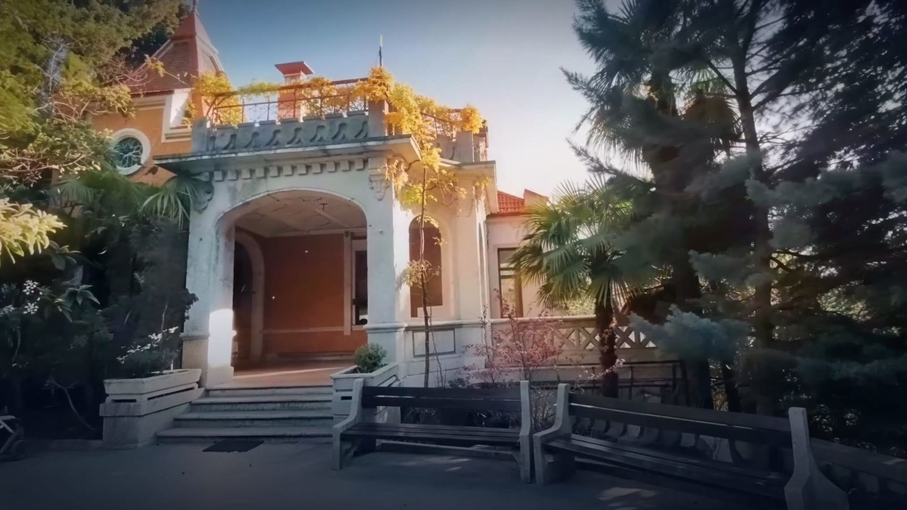

00Инновационное образовательное пространство Ай Про ШколаРебёнку интересно,
а вам спокойно
01Концепция
Углублённое обучение в малых группах
Наша концепция — безопасное, комфортное, современное место для развития ребёнка.



2019год основания
14макс. в группе
50+профессиональных педагогов, работающих с детьми
8.30–18.00возможность пребывания
Территория и условия
Гектар охраняемой парковой территории
Исторический особняк в сердце Ялты
Видеонаблюдение
Парковка
Автономность и надёжность
Современное пространство для обучения
Обучение и забота
От подготовки к школе до ЕГЭ
Участие в олимпиадах, конкурсах, выставках
Сбалансированное питание
Выполнение домашнего задания в школе под присмотром педагога
Предоставление трансфера (по запросу)
Лицензия на дошкольное и дополнительное образование
02Программы
Как образовательная программа подходит вашему ребёнку?
Четыре ступени от детского сада до сдачи ЕГЭ